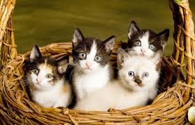
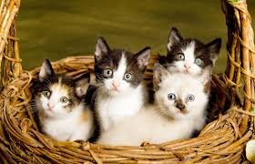
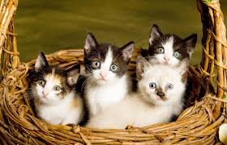

Adopciones
Adoptar una mascota conlleva compromiso y muchas responsabilidades, pero es la mejor decision que muchas personas pueden tomar
Cuatro razones de porque es bueno adoptar
1. Salvacion de dos vidas. Cuando se adopta una mascota de un refugio, no solo de salva una vida sino que se salvan dos; la de la macosta que tomara su lugar y tendra una segunda oportunidad de vivir una vida feliz y de encontrar una segunda familia.
2. Amor incondicional. La mascota que fue adoptada no dudará en demostrar su gratitud en todo momento con todo su afecto. Si bien es cierto que al principio muchas se muestran mas inseguras o miedosas, conforme se vayan acostumbrando a su nuevo hogar, nunca olvidaran el sentimiento de ese momento en el que se le dio una segunda oportunidad de formar parte de una familia.
3.Mejorar la salud mental. La mayoria de los propietarios de mascotas tienen claras las alegrias que conllevan compartir sus vidas con un amigo peludo, pero las mascotas tambien aportan beneficios para la salud. Un perro o un gato feliz puede mejorar el estado animico de una persona y ayudar a su salud mental en general, incluyendo la depresion, la soledad, el estrés y la ansiedad. El acto de acariciar o abrazarles puede reducir la presión arterial y los niveles de estrés. No solo ayudan a la salud mental, sino también a la salud física porque dan la oportunidad de mantenerse activos durante todo el dia.
4. Muy positivo para los niños. Crecen con una mascota les ayuda a desarrollarse mental y físicamente. Puede enseñarles lecciones como la responsabilidad, la confianza, la compasión, el respeto y la paciencia. Las tareas sencillas que implicar el cuidado de la mascota como pasearles o alimentarles, les ayudarán a desarrollar la empatía por los demás. Se trata de un impacto positivo mutuo, tanto los niños como las mascotas dusfrutan de las actividades de alta energía como de la hora del descanso. Además el tiempo de juego fomentará un estilo de vida saludable para los pequeños de la casa.
